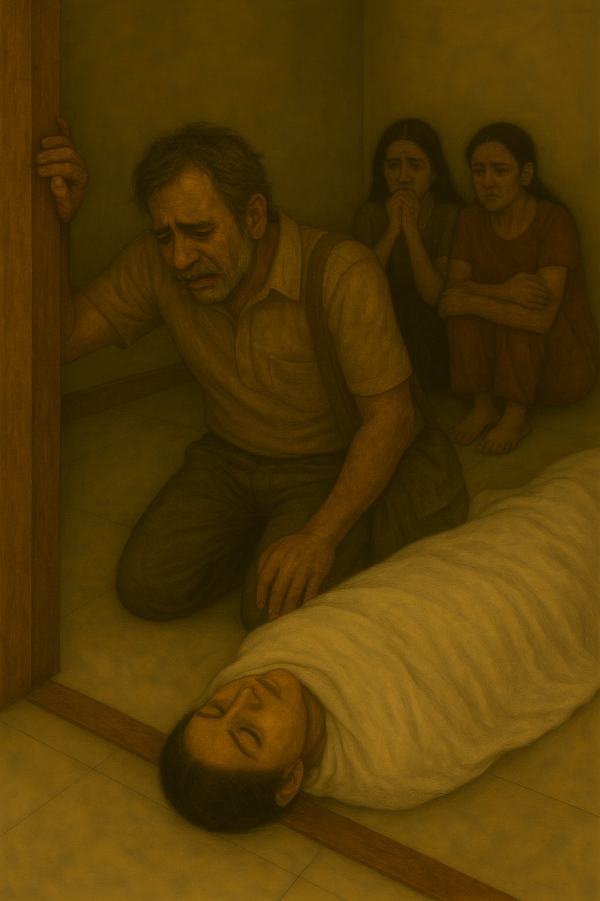
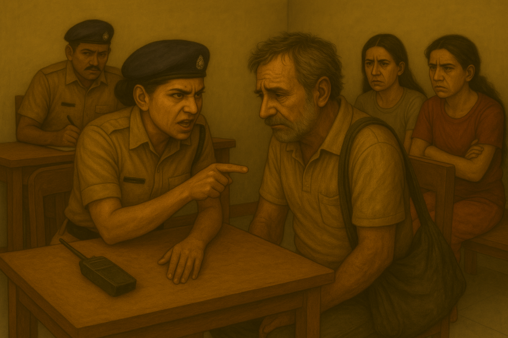

Madan Sheshadri entered the room hesitantly, his steps heavy, as though each one carried the weight of decades. His hair was grizzled, his eyes hollow, eaten away by years of waiting and despair. When his gaze fell upon Saraswati's lifeless body wrapped in white, his knees gave way. He staggered forward, clutching at the doorframe before collapsing to the floor.
Madan looked like a man worn down by time itself—early fifties, dressed in an old pair of formal trousers and a faded polo shirt. His stubble was uneven, his hair messy, as though he lived without care or purpose. A small jhola bag hung limply from his shoulder, the kind a man carries not for style, but out of habit, holding scraps of a life too fractured to mend.
"I have waited nineteen years," his voice cracked, trembling as his tears fell. He looked at Saraswati as though she might wake, his hand reaching to touch her cheek with the gentleness of a man who had rehearsed this moment a thousand times in his mind. "She vanished into time before my very eyes."

"Into… time?" Avni echoed, her voice laced with both curiosity and disbelief.
Madan caressed Saraswati's face, his fingers shaking, his expression a silent story of longing. Every look at her carried a history of devotion and loss.
Avni stepped forward and gently pulled him aside, guiding him to a chair. The officer poured him a glass of water and placed it in his trembling hands.
"Is she your wife?" Avni asked.
"Yes," Madan whispered, forcing a faint smile through his grief. "She is the love of my life."
Avni tilted her head, skeptical. "Really? She looks too young to be your wife."
Madan chuckled bitterly, his eyes still locked on Saraswati. "Yes… and that's where the complexity lies."
He exhaled deeply before continuing. "Saraswati and I worked together on an experimental device. We built it to function during a total solar eclipse. We called it—fancifully—the Chronoblade."
"Chronoblade?" Avni narrowed her eyes. "Care to explain?"
"It was… in simple terms, a time travel machine," Madan said, his tone carrying both pride and regret. "We worked for years—every copper coil, every calibration mark… they carried both our fingerprints. In 1995, she was thirty-three years old when she stepped inside. And then…" his voice broke, "she vanished into time. I always believed she was somewhere—somewhen—and that I would meet her again. But not like this. Not like this."
His eyes glistened, his hand tightening around the jhola strap. "I still return to that room every single day. Haven't let anyone touch it. I just sit there, watching the device for hours, waiting for her to reappear. Every morning I wake with hope. Every night I fall asleep with disappointment."
Avni crossed her arms, raising an eyebrow. "If you believed so much in the machine, why didn't you follow her? Were you scared?" she asked, her voice sharp, almost mocking.
Madan shook his head slowly. "No. I did try in 2009, but that year the window of the total solar eclipse was too small for me to get the devie to work correctly." His tone was calm, resigned—an acceptance of his own inadequacy.
By then, the officers stepped forward. Saraswati's body had been identified, and protocol demanded it be taken away for postmortem. One of them handed a form to Madan, and with a trembling hand, he signed it. As the constables began lifting Saraswati's covered form, Madan instinctively rose, trying to follow.
But Avni stopped him, her hand firm on his shoulder. "Not yet, Madan. You've waited nineteen years. You can wait a few more hours to be by her."
She turned to the officers. "Everyone to the station."
The lady constables guided the shaken Aditi and Shwetha into the police jeep, their faces still pale from shock. Madan, clutching his jhola, was escorted into another vehicle with Avni by his side.
At the police station, the night hung heavy. The air smelled faintly of dust and ink, the silence broken only by the occasional buzz of a ceiling fan. Aditi and Shwetha sat quietly on a wooden bench, their eyes darting nervously across the room. Madan sat across from Avni, who perched on the edge of a desk, her sharp gaze fixed on him. Behind her, an officer sat with pen poised, taking notes.
Avni leaned forward, her tone cutting. "So, Madan… tell me. Why did you send that old man to kill Saraswati?"
Madan's head snapped up, his eyes flaring. "What? Why would I kill her? Why would anyone want to kill her?" His voice trembled with fury but he forced himself to stay calm.
"You tell me," Avni shot back, her eyes never leaving his.

Madan clenched his fists, his jaw tightening. Silence lingered in the air for a moment, broken only by the scratching of the officer's pen.
"Alright," Avni said, her voice cold but steady. "Let's go back. Tell me what happened in 1995. Start from the beginning."
Madan leaned back in his chair, his eyes drifting toward the window. The pale moonlight slipped through the bars and fell across his tired face, etching the lines of sorrow and memory. He closed his eyes for a moment, and when he opened them, they carried him far away.
And then—he began to speak.